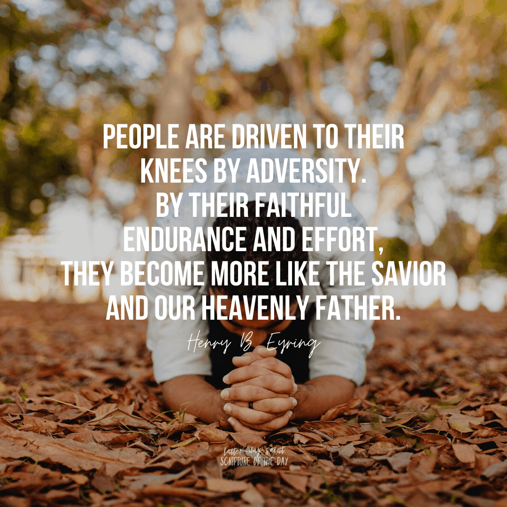

What Does It Mean to Endure to the End?


Enduring to the end means remaining faithful to Jesus Christ throughout your life, even when things are hard or uncertain. It is a daily effort to keep the commandments, trust God, and continue on the path He has set for us[1][2][5].
As we endure, we grow stronger, learn from our challenges, and become more like Jesus Christ. We can find peace and happiness as we press forward, step by step, with faith and hope.
“Wherefore, ye must press forward with a steadfastness in Christ, having a perfect brightness of hope, and a love of God and of all men. Wherefore, if ye shall press forward, feasting upon the word of Christ, and endure to the end, behold, thus saith the Father: Ye shall have eternal life.”
Enduring to the end is not just surviving—it's choosing to follow Jesus Christ every day and trusting in His promises.